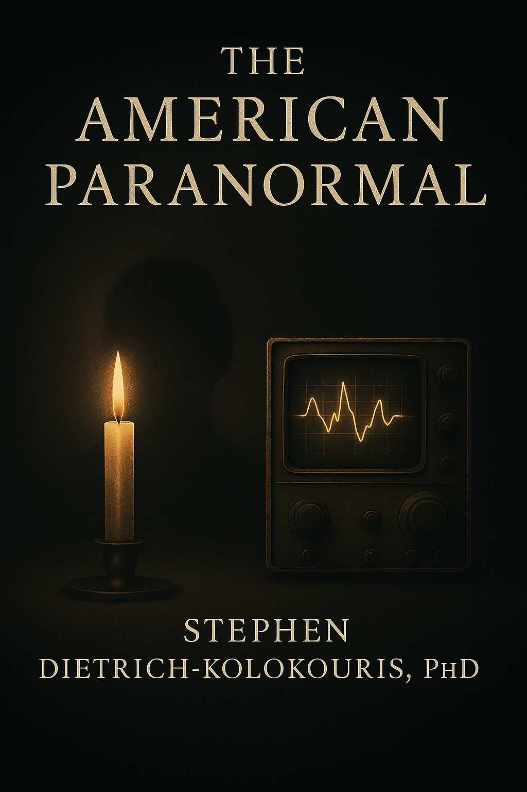

Spiritualism in America
From the Fox sisters forward, the book tracks how American culture democratized the search for contact with the dead.

A dark, research-driven investigation spanning 150 years of American Spiritualism, psychical inquiry, ghost-hunting technology, and the one question no instrument has yet answered: whether awareness survives bodily death.
A work that refuses the comfortable divisions between history, science, and the unknown. Watch the official trailer for The American Paranormal.
The American Paranormal is a serious work of contemporary nonfiction. It does not perform skepticism — it practices it. It does not traffic in comfortable certainties in either direction. It treats the survival question as exactly what it is: the most consequential unresolved problem in the history of human inquiry.
The book moves through history, technology, and philosophy without losing the thread that connects all three: the persistent American conviction that death is a boundary worth testing.
From the Fox sisters to AI-assisted signal analysis, the book traces how Americans have reached across the boundary of death using whatever tools their era provided — and what it has cost them in credulity, grief, and stubborn hope.
From the Fox sisters forward, the book tracks how American culture democratized the search for contact with the dead.
Planchettes, radio, recording devices, EVP, and ITC become part of a longer history of technological mediation.
The central question is not spectacle. It is whether awareness survives bodily death and what would count as evidence.
The book does not evade deception. It confronts fraud, exploitation, wishful thinking, and the limits of proof.
Modern tools raise a new possibility: machine-assisted analysis of phenomena once left to testimony, memory, and ritual.
If proof ever comes through technology, who owns access to the dead, and what happens when only the wealthy can afford it?
Four passages from four different chapters. Each one speaks to a different dimension of the book’s argument.
The room is dark, as rooms conducting this experiment always are. Six people sit around a table, hands linked, breathing synchronized to the rhythm a researcher establishes through counted intervals. Electronic equipment hums in the corners — EMF detectors, digital voice recorders, cameras with infrared capability, a laptop running software designed to analyze electromagnetic fluctuations in real time.
This is not a Victorian séance, though it descends directly from that tradition. This is a controlled investigation conducted in 2023 by a research team affiliated with a major American university, and everything happening here will be documented, measured, and subjected to statistical analysis that previous generations of Spiritualists never imagined.
Later, reviewing the data, the team will note the correlations — temperature drop, electromagnetic spike, participant reactions all clustering within a five-second window — but they’ll also note that no single variable exceeded threshold significance when analyzed independently. The pattern is suggestive. The evidence is ambiguous. Which is to say: the experiment succeeded in producing exactly the kind of results that paranormal investigation has produced for over 150 years. Almost enough. Never quite conclusive.
Modern, empirical, unresolved. You are inside a real 2023 investigation before the end of the first page.
Almost enough. Never quite conclusive. Those six words carry the weight of 150 years of investigation.
The night air in Hydesville, New York, penetrated everything it touched. Late March 1848, and winter refused its exit. Two young sisters lay beneath patchwork quilts in a farmhouse that had acquired a reputation before they arrived — whispers of sounds that made neighbors pause at dusk, when certainty dissolved between one breath and the next.
This distinction matters: invisible does not mean absent.
The cold that night seemed to rise from beneath the house itself. Not from the failing hearth or the March wind, but from the soil below — as though the earth were not inert matter but something aware, something patient. In the cellar that smelled of rotting potatoes and damp stone, the first knocks began. Soft, like fingertips testing a boundary. Then louder — until the walls pulsed with rhythm, with intention.
Kate clapped twice. Two knocks returned.
In that moment, in a farmhouse reeking of lamp oil and old iron, something shifted. Not just in the room, but in the relationship between the living and whatever was no longer living. The boundary had always been there, of course. But perhaps boundaries exist only as long as both sides agree to maintain them.
Two farm girls in upstate New York. A dead peddler. And a crack in the wall between worlds that never fully closed.
No priests. No pulpits. Just two girls and a presence that knew impossible things. The entire Spiritualist movement followed from that single exchange.
In a climate-controlled server room somewhere in Northern California, humming with the white noise of cooling fans and blinking with LED indicators that never sleep, an artificial intelligence trained on decades of Electronic Voice Phenomenon recordings analyzes static. It listens — if listening is the right word for what algorithms do — to hours of white noise, radio frequency sweep recordings, and the electromagnetic hash that fills the spaces between stations.
The AI identifies patterns that human researchers missed across forty years of EVP investigation: recurring phoneme clusters, frequency anomalies that correlate with reported entity encounters, statistical regularities in what researchers had assumed was random noise.
The AI doesn’t know what it’s hearing. It has no concept of ghosts, no understanding of death, no framework for consciousness beyond the material. It simply finds patterns — and what it finds troubles the researchers who commissioned the analysis, because the patterns are too regular, too structured, too responsive to environmental variables to be mere pareidolia. Three possibilities, none of them comfortable. First: some consciousness generates these patterns in response to questions. Second: investigators’ neurological activity creates measurable electromagnetic signatures that recording equipment captures. Third: the universe contains feedback loops between observation and phenomenon that science hasn’t mapped. Choose your explanation. None of them allow comfortable sleep.
The AI can quantify the correlation. It cannot explain it. That gap is the book’s most unsettling argument.
Machine learning detects what forty years of human analysis missed. Not proof — but structure. And structure implies a source.
Imagine, for a moment, that the question is finally answered. Not through ambiguous séances or compelling but ultimately subjective testimony — but through technology so precise, replicable, and transparent that global scientific consensus emerges: consciousness survives death, communication with the deceased is possible, and the afterlife exists in forms that can be mapped, measured, and accessed.
What happens next?
Stop and consider what this moment would mean. Not the discovery itself — but what happens afterward, in the hours and days and years following the announcement. Because unlike discovering a new particle or mapping a distant galaxy, proving the afterlife doesn’t merely add knowledge to human understanding. It detonates every assumption about existence, about meaning, about power.
If the afterlife can be proven, it can be accessed. If it can be accessed, it can be controlled. And if it can be controlled, then death — the one certainty that has unified human experience since consciousness first evolved — becomes the ultimate axis of exploitation, domination, and inequality. Not just for one lifetime, but forever.
Your mother dies. You know she still exists, know her consciousness persists in forms that can be reached through technology. You see advertisements everywhere: “Stay Connected.” “Love Never Dies.” “Family Forever — Starting at $29.99/month.” You scrape together money for the basic package. One five-minute text conversation per month. Time runs out mid-sentence. To continue, upgrade your plan. Meanwhile, your wealthy neighbor has unlimited access. His dead father attends virtual family dinners every week. The inequality burns not because it’s unfair — life has always been unfair — but because it extends beyond life.
The book’s final argument isn’t about whether the dead can speak. It’s about who gets to listen.
Death used to be the one equalizer. This chapter argues it may become the ultimate axis of class division — and we have no ethical framework prepared for it.
The SPR — founded in London in 1882 — is the oldest and most respected institution in the world dedicated to the rigorous scientific investigation of paranormal phenomena. Its membership has included Nobel laureates, philosophers, and heads of state. A formal review in its publications is among the highest forms of recognition available to a work in this field. The American Paranormal received a full review by Ciaran Farrell — himself a psychical researcher, paranormal investigator, and ghost hunter.
Read the Full Review on SPR.ac.uk →A very unusual, interesting, and challenging book in which the reader will see that the author has considered in some considerable depth and breadth the matter of there being more questions than answers in the world of the paranormal — its history, its development, and that of humanity itself.
Reminiscent of Henry James’s The Turn of the Screw — two competing and contrasting narratives that rely on one another: a historical account of the development of spirit-based technologies, and a critical philosophical commentary running alongside it.
A historian and a remarkable man with a diverse set of interests, skills, and talents — an author who has spent many long hours waiting in the dark for something to happen, contemplating what contact with discarnate entities would mean for humanity as a whole.
A modern Gothic scientific and science fiction-based book — a novel, enthusiastic, thought-provoking, philosophical journey through the history of Spiritualism from a technological perspective for those who love the challenge of the paranormal.
Very much a philosopher’s book for those who engage in paranormal investigation — though there is also something there for the devotees of cosmic consciousness theory, Spiritists, Spiritualists, technologists, and historians alike.
From paranormal investigators and historians to curious skeptics — responses from across the readership.
“Unlike anything else in the paranormal space. Rigorous, dark, and genuinely unsettling in the best way. The chapter on AI mediumship alone is worth the price.”
Verified Amazon Reader“I came in as a skeptic and left with far more questions than I arrived with. That’s exactly what serious nonfiction should do.”
Verified Amazon Reader“The historical depth is extraordinary. You can feel the research behind every chapter. The Fox Sisters section alone reads like a thriller.”
Verified Amazon Reader“Finally a book on this subject written by someone who takes both the evidence and the doubt seriously. No cheerleading, no debunking. Just the real history.”
Verified Amazon ReaderCindy Kaza's chapters are not a detour from the book's central argument. They are its most direct encounter with what happens when trained evidential mediumship meets the same rigorous scrutiny the book applies to every other form of claimed contact with the dead.
Cindy Kaza is a psychic medium and clairvoyant who brings her extraordinary abilities to The American Paranormal. Trained at England’s prestigious Arthur Findlay School of Intuitive Sciences, Cindy is known for her work on Travel Channel’s The Dead Files and The Holzer Files, where she combines mediumship with paranormal investigation.
As a clairvoyant, clairaudient, and clairsentient, Cindy provides highly specific evidence during readings designed to reduce skepticism and demonstrate authentic connections with spirits. Her chapter in The American Paranormal explores the intersection of evidential mediumship and paranormal investigation, offering readers documented encounters that bridge the gap between the living and the spirit world.
Stephen Dietrich-Kolokouris is also the author of Chicago Ripper Crew: Reboot — a true crime work examining one of the most disturbing criminal networks in American history. It occupies entirely different territory than The American Paranormal, and has its own dedicated companion site.
Visit the dedicated companion site for Chicago Ripper Crew: Reboot.
A structured research index cataloging the terminology, traditions, entities, and investigative concepts that define American and global paranormal inquiry — built for historians, researchers, and investigators, not casual browsing.
Each entry carries full structural depth: identity, taxonomy, geographic specificity, historical framing, belief-status classification, research flags, and editorial controls — built as a serious reference index for paranormal history, occult traditions, cryptid taxonomy, folklore, Spiritualist lineage, and investigative vocabulary across American, British, and global corpora.
Sign up and receive a free PDF field guide to EVP methodology — the investigative framework behind The American Paranormal. No noise, no newsletters. Research updates only.
Enter through the trailer. Stay for the question. Leave with a book that treats Spiritualism, technology, consciousness, and the afterlife as a live problem — not a solved one.